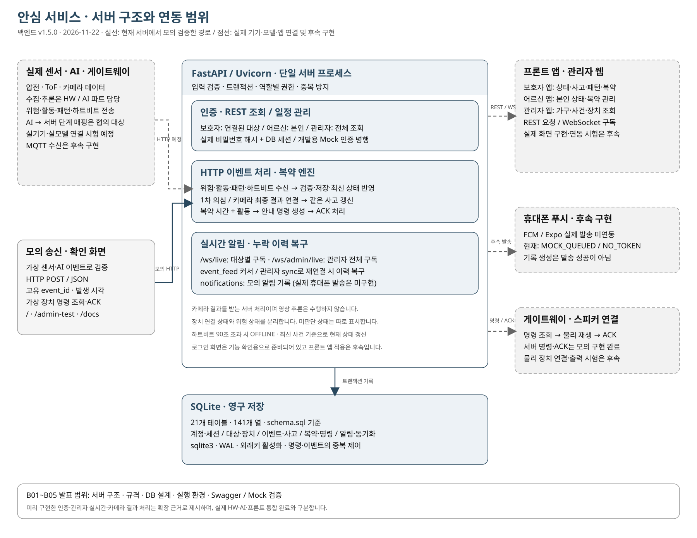
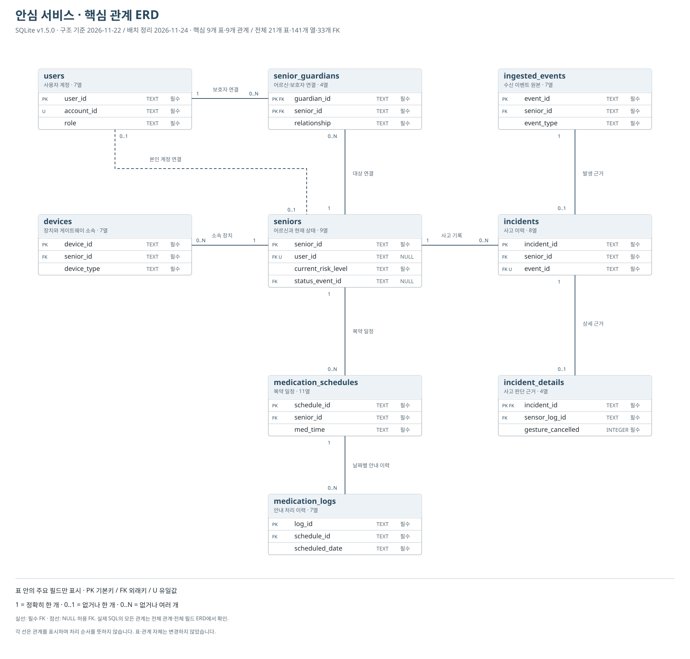

2026-11-22 · v1.5.0 · SQLite 21개 테이블·141개 열·33개 FK · HTTP 34개 경로·36개 작업
모의 검증 범위와 실제 센서·AI·앱·푸시·스피커의 후속 연결 범위를 표시했습니다.

2026-11-24에 배치를 정리했습니다. 이 그림은 핵심 9개 표·9개 관계를 직각선으로 보여줍니다. 전체 21개 표·33개 관계와 141개 열은 아래 별도 그림에서 참조 상자로 확인합니다.

새 ERD 읽는 법 · 전체 관계 ERD · 전체 필드 ERD · 데이터 사전 · 실행 SQL · 최신 DB 정의서 XLSX · drawDB 가져오기 JSON
검증 기록 · 복약 정책 · 로그인 준비 · 관리자 실시간 규격 · 카메라 결과 제안 규격